The Interface
Since 1.30 every window, menu, dialog, the main HUD and the phone layout are built from one small kit of parts and one set of colours. This page is the map: where things are and what the shapes mean. Nothing you can do changed — every shortcut, setting, scrub field and panel works as before; only the look and a few placements moved.
One accent colour
Blue marks what you can act on or have selected: the armed tool, a switch that is on, the chosen chip, a primary button, the focus ring. Orange is kept for things that are live — Play, recording, streaming — so it stands out where it matters. A Shared or This device badge beside a heading says who a setting affects, instead of a paragraph explaining it.
The light theme and every custom .theme.json restyle all of it; see Themes & Appearance.
The main HUD
- The toolbar at the bottom is one glass bar: Move, Rotate, Scale, Interact, Play (the only orange button), then the windows you keep there (Objects, Node editor, Explorer, Animation…). The accent fill marks the armed tool or an open window. It is still yours to arrange — right-click any button (or press and hold it) ▸ Edit positions to drag the buttons into place; see The toolbar. The two corner stacks — bottom-left (the AI assistant and +) and bottom-right (Chat and the microphone) — are arranged the same way. Buttons that do not fit fold into a » button at the end of the bar — see When the buttons do not fit. Since 1.35 the whole bar, each corner stack, the buttons beside the logo, the top-right group and the Connect bar can be dragged anywhere on the screen, and the bar turned vertical — see Edit positions.
- The logo (top-left) opens the main menu, grouped as Project · Scene · Collaborate · App — see The main menu's Project actions. A press anywhere outside the menu closes it; pressing another button (a bottom-bar tab, the bell, Play) closes it and does that button's job in the same press, and pressing the 3D view only closes it — nothing gets selected or deselected.
- The Connect bar (top centre) shows your ID — click it to copy your invite link — and the field to join someone, with the status dot at its left end. Once you are connected it collapses to a chip: the dot, the avatars of who is here and your mic. Click the chip to open the full bar again. On a computer the dot has no words beside it — point at it to read them; see The status dot. It is either pinned along the top row or floats as a pill (its drawer chooses, or right-click it — press and hold on a touch screen — for Move, Pin to top row / Float, Reset position and Reset all); a floating bar with no room turns compact, and you can move or hide it — see The Connect bar.
- Top right: scene notes, the notification bell (with a count) and the peers panel sit in one group beside your picture, which opens your profile menu (Customize character, Profile settings). Since 1.33 that group is arranged with Edit positions too; emptied, it leaves no box behind. Since 1.36 the profile menu opens under the profile button wherever it is, beside a pinned right sidebar too.
- Toasts are calm cards under the Connect bar, at most three at a time; more collect behind +N more. See Toasts.
- Someone who is speaking in voice chat gets a soft green ring on their avatar.
- Buttons are 36–38 px with a mouse and grow to 44 px on a touch screen.
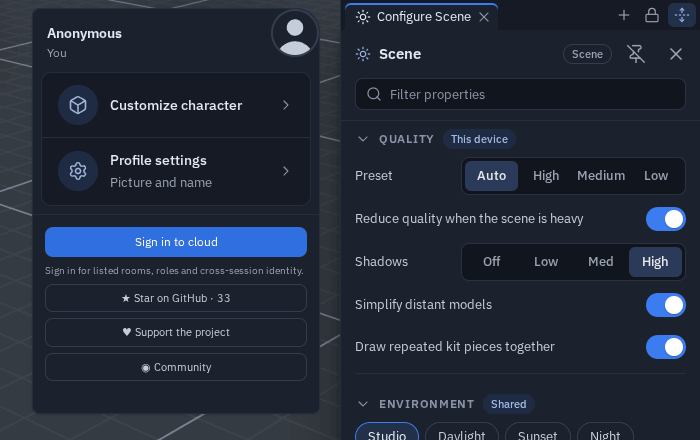
The command palette (Ctrl+K)
Ctrl+K opens one search box over everything: tools (Move, Scale, Interact…), windows (Explorer, Objects, the Profiler…), menu items and every setting. Type a few letters, move with ↑ ↓, press Enter to run it; Esc or a click outside closes it. Picking a setting opens Settings already searching for that row. The palette is listed in the shortcut sheet (?) and can be rebound there like any shortcut.
Windows and tabs
Every docked or floating window — Explorer, Objects, Chat, AI assistant, Notes, the Notification centre, the node editor, Flow code, Animation, UV, Shader, HUD editor, Profiler, the Code workspace — has the same header: icon, title, the window's own actions, then pin and close in the same places. Windows in one group, and the views in the bottom dock, share one tab strip: pill tabs with the view's icon and their own ✕ to close that view. More tabs than fit scroll sideways (the wheel or a swipe; the strip fades where more tabs are hidden) while + stays in place, and the strip keeps its scroll when you pick a tab. Moving, docking and tabbing are described in Floating windows.
Long names — an object or file name in a window header — stay on one line and end in "…", so they never push the window's buttons out of place. Point at the name (or press and hold it on a touch screen) to read it whole. On a narrow phone the Animation window puts the name on its own line above its controls.
Sidebars
On a computer or a tablet-width window, each side of the screen holds one sidebar. Every panel docked to that side is a tab of it: Configure Scene / Properties, the Objects list and any window you dock to the edge (the Node editor, the Explorer…). Only the tab in front is shown, so opening a panel on a side that already has a sidebar brings its tab forward instead of opening a second column. The sidebar's header strip holds one tab per panel, a + after the tabs and, at its far end, the Full height button (↕) and the hide button.
- Switch by clicking a tab (or ← / → with a tab focused).
- Close a panel with the × on its tab. It leaves the sidebar, and its side is remembered for next time. Since 1.35 closing (or moving away) the last tab leaves the sidebar open and empty, with its + and Press + or drag a tab here — drag a tab or a floating window onto it, or hide it.
- Add a window with the sidebar's +: it lists every window. One that is closed opens as a tab of this sidebar; one that is already open is ticked, says where it is and comes to the front there (see The "+" menus). On a touch screen windows do not join the side columns yet, so there the + opens the window as it would anywhere.
- Show or hide a sidebar with Ctrl+B (left) and Ctrl+Alt+B (right) — ⌘ on a Mac, the same keys as VS Code — or its hide button. Hiding keeps every tab open: showing it again brings them back, and opening a panel onto a hidden sidebar shows it again. A sidebar that had nothing in it opens empty with its +. Rebind both in Settings ▸ Shortcuts (Panels); inside the code workspace the same keys toggle its own sidebars. A hidden sidebar comes back after a reload; an emptied one stays empty.
- Right-click a tab (press and hold on a touch screen) for its menu: Close, Close others, Undock into a floating window, Move to the other side and Move to the bottom dock. Configure Scene and Properties live only in a sidebar, so their Undock and bottom dock rows are greyed out with the reason.
- More tabs than fit scroll sideways (the mouse wheel or a swipe), like the bottom dock's tabs; the tab in front is kept in view.
- Drag a tab anywhere — see Dragging a tab below.
- Dock a floating window: drag it — by its header or any empty part of it — to a screen edge, or onto a sidebar (Add as tab lights up), or right-click its header ▸ Move to the left / right sidebar — it becomes a tab of that side. Hold Ctrl (Cmd on a Mac) while you drag to place it floating over the sidebar instead — see Moving a floating window.
- Resize by dragging the sidebar's inner edge; a double-click resets it. All tabs of a side share the width. The logo and the profile button move with the edge as you drag. On a touch screen the edge is easy to grab, the sidebar stops at its minimum width (250 px), and its content never scrolls sideways — rows that do not fit wrap onto a second line.
- Full height: press ↕ and the sidebar runs from the top edge to the bottom edge. The buttons in that top corner (the logo and menu on the left; notes, notifications and your profile on the right) move inward at once — since 1.36 they jump to their new place instead of sliding, the Connect bar too — and the bottom dock gets narrower so it sits beside the sidebar, never under it — every docked view, Statistics, Chat, Objects, the Live profiler, the AI assistant and the Shader editor included. Press it again to fit the sidebar under the top buttons. The main menu always opens above sidebars. With one or both sides at full height the Connect bar stays a pill, centred between the logo and the corner buttons. The toolbar never slides under a full-height sidebar — see The toolbar and sidebars.
- The header lock of Configure Scene and Properties sits beside Full height in the tab row while that panel is the tab in front — see Panel headers.
- A pinned Properties (the pin in its header) follows your selection without pulling its tab over the Objects list when the two share a side; double-click an object (or pick Properties in its menu) to bring it forward.
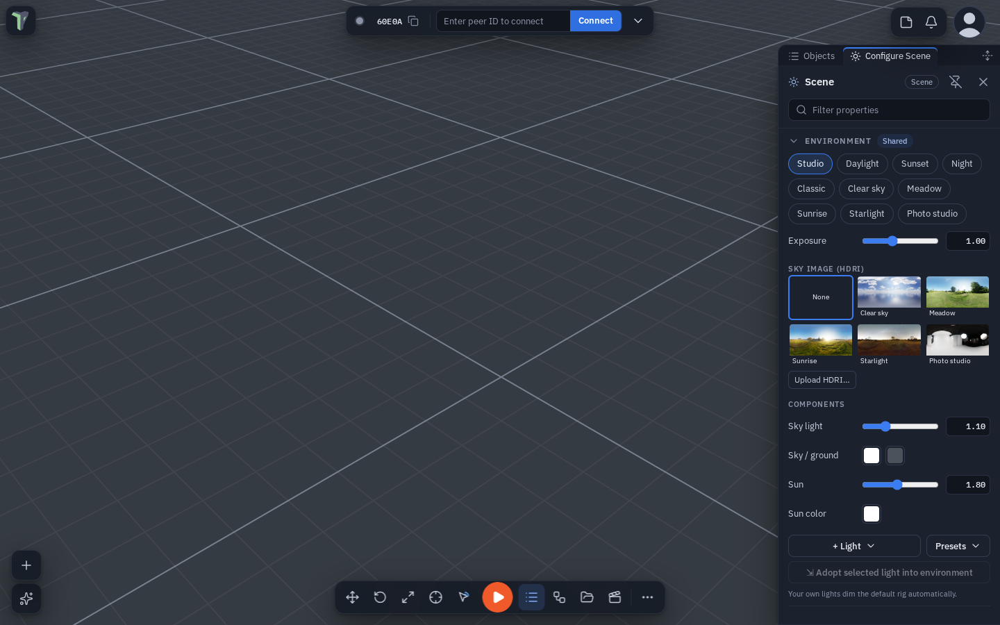
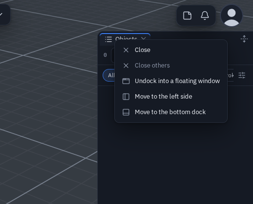
Dragging a tab
Drag a sidebar tab and a highlight shows what will happen before you let go — there is never a silent drop:
| Let go over | Highlight | What happens |
|---|---|---|
| the other side | Move to the left / right side, or Add as tab when a sidebar is already open there | the panel docks on that side |
| the bottom dock or the bottom edge | Move to dock (on the dock's tab bar a marker shows the spot) | the panel becomes a dock tab |
| anywhere else in the 3D view | Float here | the panel becomes a floating window where you dropped it |
| its own sidebar | Stays here | nothing |
Dragging a floating window onto a sidebar (or a screen edge), or a bottom-dock tab onto a sidebar, shows the same highlights, painted above every panel; the window you drag turns see-through so the highlight stays readable.
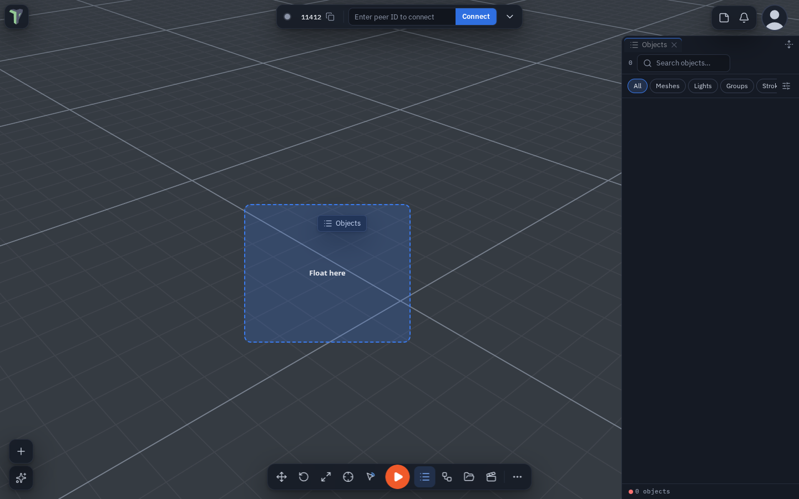
Any window in a sidebar
Every window that can be docked at the bottom can also be a sidebar tab — the Node editor, Flow Code, Animation, UV, Shader and HUD editors, the Explorer, the Profiler, Code, the Image editor, Objects, Statistics, the Live profiler, Chat and the AI assistant:
- Into a sidebar: drag the floating window (by its header or any empty part) to the left or right edge or onto an open sidebar, drag its bottom-dock tab onto a sidebar, right-click its dock tab or its floating header ▸ Move to the left / right sidebar, or pick it in the sidebar's + while it is closed.
- Back to the bottom: right-click its sidebar tab ▸ Move to the bottom dock, or drag the tab onto the dock.
No second header. A window in a sidebar shows no window header of its own: the sidebar tab is its header (name, ×, menu). Windows whose header carries tools keep a slim tools row without the title, ×, Dock or +: Objects (search), the Explorer (search and filters; its search hides when the sidebar is narrower than about 520 px, as in a narrow floating window), the Shader editor, Code, the Profiler, the Image editor (the file name) and Statistics (the budget dot and re-read).
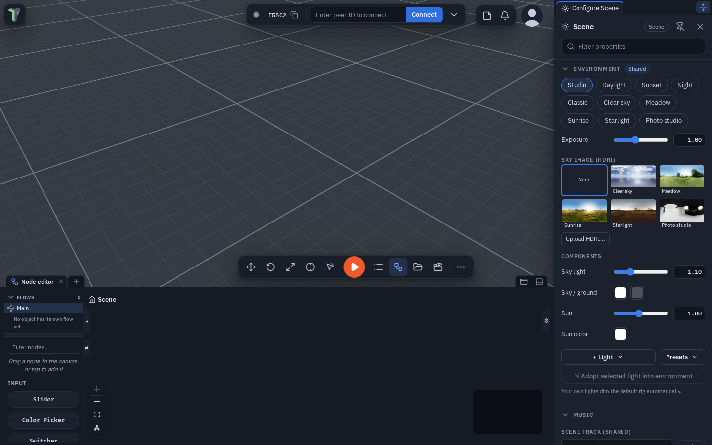
Which side Configure Scene and Properties dock to, each side's width and Full height, the tab order and the tab in front are kept on this device and saved in workspace layouts. A phone keeps its bottom dock instead.
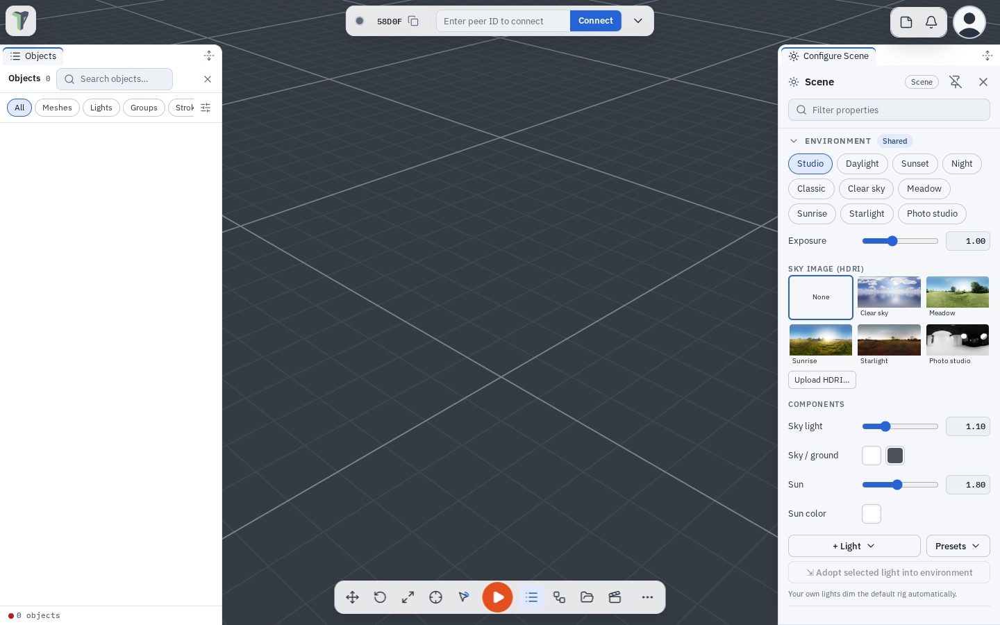
Panel headers
The Properties and Configure Scene headers — the panel's name and the Filter properties box — have a lock button. On a computer or an unfolded phone it sits in the sidebar's tab row, next to Full height, while that panel is the tab in front; on a phone it stays in the panel header, beside the pin.
- Locked (the default): the header stays on top while you scroll the properties.
- Unlocked: the header scrolls away with the properties, giving the whole panel to them — handy on a phone.
Each of the two panels remembers its own choice on this device, in a sidebar and in the phone's dock alike. Settings ▸ Interface ▸ Windows & chrome ▸ Sticky panel headers sets both at once (it shows a mixed state while they differ); searching Settings for sticky header finds it.
Every value in these two panels can be copied, pasted and reset from a right-click — see Copy, paste and reset values.
Docked windows
Since 1.32 a window in the bottom dock has no ✕ or undock button of its own:
- Close it from its tab. Every tab carries its ✕.
- Undock sits at the right end of the dock's tab strip, just left of Minimize the dock. It takes the window you are looking at out of the dock as a floating window. To have it take every docked window out as one floating window with tabs instead, set Settings ▸ Interface ▸ Windows & chrome ▸ Undock button to All as one tabbed group (the default is Active window).
- You can also drag a tab out of the strip — or right-click it ▸ Undock into a floating window — to undock that one window. A docked window moves by its tab, not by its header. The same menu has Move to the left / right sidebar (see Any window in a sidebar).
- The dock's + lists every window that can live in the dock — the Node editor and the Image editor included, and since 1.33 also Objects, Statistics, the Live profiler, Chat and the AI assistant — the same list as the phone's Windows sheet. See The "+" menus for what a pick does.
- An empty dock: with nothing docked, T opens the dock empty — its tab strip with only + and the line Press + or drag a tab here. Drop a floating window on its strip or its body to dock it there; T again closes it.
The "+" menus
Every + — the dock's, a sidebar's, the floating Node editor's — lists every window, and since 1.35 it never makes a second copy:
- A window that is already open — in the dock, in a sidebar or floating — is ticked and says where it is (In dock, Left sidebar, Right sidebar, Floating). Picking it brings it to the front where it is: it is not moved, docked or closed.
- Only a closed window opens, into the + you pressed.
- Pick several at once: hold Ctrl (⌘ on a Mac) or Shift while you click rows — each window opens and the menu stays open for the next pick. From the keyboard, type to filter and press Ctrl+Enter. A plain click opens one window and closes the menu.
To close a docked window use its tab's ×; to bring a floating window into the dock, drag it onto the dock or use its window menu (Dock to bottom).
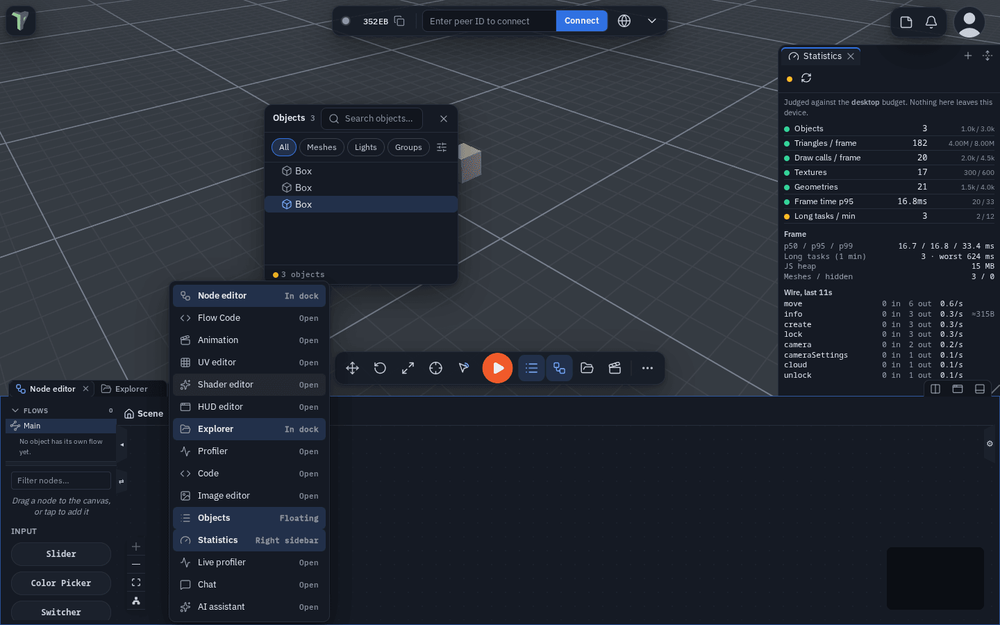
Dock any window exactly where you want it: drag a floating window by its header or any empty part of it — or tear a tab out of a tabbed window, or drag a whole tabbed window by its tab bar — onto the dock's tab bar. The window turns see-through, the tab bar is outlined and a caret shows the slot between the docked tabs where it will land; let go and it docks exactly there. This works for every editor and for Objects, Statistics, the Live profiler, Chat and the AI assistant; file and model previews, the text viewer, What's new and the tool palettes stay floating. The bottom edge of the screen still docks a window at the end of the tabs (and is the only target while the dock is minimized; an empty dock opened with T takes a drop anywhere on it). Since 1.35 this works by touch too, on an unfolded phone or a tablet. Everywhere else a floating window simply moves — over the open dock, over the sidebars, partly off screen — and stays under the cursor the whole way; a header that ends up under the Controls bar is nudged above it when you let go.
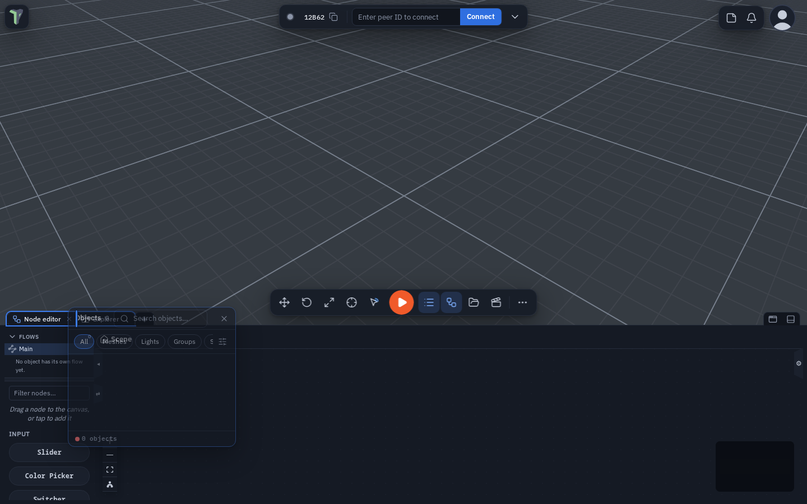
Floating windows can overlap the dock: move them over it and resize them past its top edge — only the screen edge stops the resize corner. The Objects list remembers whether you last had it docked, and the toolbar button and O open it there.
Splitting the dock
The bottom dock can show two windows side by side — the Node editor beside the Explorer, the Shader editor beside Statistics — with a divider between them. The pair is one tab in the dock's strip, named with a slash: Node editor / Explorer.
- Press Split (the two-columns button left of Undock and Minimize): the tab in front is shown beside the next tab in the strip. If it is the last tab, the right pane starts empty — press its + (or drag a tab onto it) to choose its window. Press Split again (it shows pressed) to unsplit: the two windows become two tabs again.
- Drag the divider to give one side more room (mouse, pen or touch); double-click it to centre it. With the divider focused, the arrow keys move it (Shift for bigger steps). Each pane keeps at least 15 % of the dock's width.
- Click inside a pane to work in it — its name is bold in the pair's tab, and Undock, the tab menu and the shortcuts act on it.
- Drag a tab onto a pane to show it there instead; the window it replaces stays a tab.
- The tab menu (right-click or long-press a dock tab) has Split right and Split with ▸ (pick the partner), and on a pair Swap sides and Unsplit. Closing the pair's tab (×) closes both windows.
Splits and the divider's position are kept on this device and in workspace layouts. If the app closes one window of a pair for a while, the other fills the dock until it comes back. Splitting needs a wider screen — a computer or an unfolded phone; on a folded phone the dock is one column and a pair shows as its two ordinary tabs.
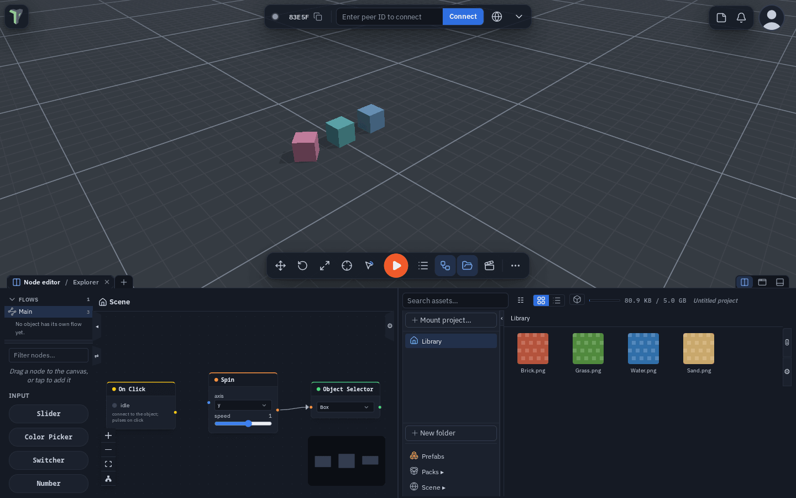
Floating windows with tabs
- Join a window as a tab: drag a tab out of the dock and drop it onto a floating window. It joins that window as a tab instead of opening a second window.
- Dock all tabs: a floating window with tabs has a dock button just left of Close all tabs. It puts every tab back in the dock. For a window with one tab, drag its tab to the dock, or use the window's Dock button.
- Move it by touch: drag its tab bar — or any of its tab names — and the whole window follows your finger, on a phone or an unfolded foldable alike. A tap on a tab still switches to it.
- Hold a tab (press and hold; right-click with a mouse) for that window's window menu: Float (undock) takes it out of the group, just beside it; Dock to bottom and Move to the left / right sidebar move only that view (greyed out for windows that always float, such as a file preview); Close closes that view and the rest of the group stays.
Layouts… (Menu ▸ Layouts) opens a regular dialog for your saved arrangements — on a folded phone, a tab of the bottom dock — see Workspace layouts.
Lists scroll with a thin scrollbar that appears only while you scroll or point at them; there are no chunky native scrollbars anywhere.
Focus mode
Press Ctrl+Space to maximize the area under the mouse pointer:
- over the 3D view (or a toolbar or a floating window): every panel, window and dock is hidden and the 3D view fills the screen;
- over a docked window (the Code window, the Node editor, the Explorer…): since 1.34 that window fills the whole browser window. Its tab row runs along the top edge, so you can still switch tabs, and the window reaches every edge. The sidebars step aside while it lasts and come back exactly as they were — open, pinned, width and side — when you leave. You can still drag the window's top edge down to see the 3D view behind it.
Press Esc or Ctrl+Space again — or click Exit focus (in the tab row for a docked window, at the top for the 3D view) — and everything comes back exactly as it was; nothing is closed. Beside Exit focus on a docked window, a Viewport button shows or hides the viewport picture-in-picture without leaving focus mode. Focus mode also ends when a dialog opens or you press Play.
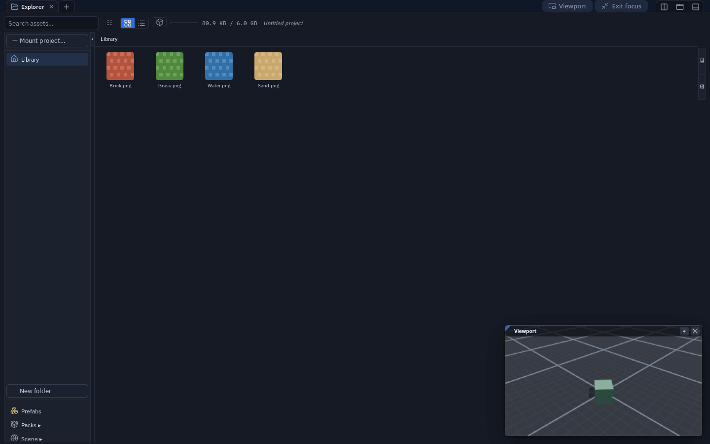
Without a keyboard: View ▸ Focus mode in the 3D view's right-click menu, right-click a dock tab ▸ Maximize (focus mode), or on a phone More ▸ Tools & View ▸ Focus mode (which you can also drag onto the phone bar).
Inside the UV editor and the Animation timeline Ctrl+Space keeps its own meaning (keyboard selection) while you work there; use the menu entries, or rebind focus mode in Settings ▸ Shortcuts.
The viewport picture-in-picture
While a docked window fills the whole window, the 3D view shows as a small picture-in-picture (PiP) in the bottom-right corner, on top of the docked window. It is a live second view of the scene with its own camera — moving it never moves your main view.
- Navigate: left-drag orbits, right-drag pans, the wheel zooms; on a touch screen one finger orbits and two fingers pinch and pan.
- Edit: click (or tap) an object to select it (Shift adds). With the pointer over the PiP, W / E / R pick Move / Rotate / Scale (1 / 2 / 3 and G work too), drag the gizmo to transform, F frames the selection in the PiP, Delete deletes and Ctrl+Z undoes.
- Move it by its title bar and resize it by the grip in its top-left corner; double-click the grip for the default size (the size is remembered); it starts in the bottom-right corner each time. ⌖ puts its camera back on your main view.
- Show or hide it with the Viewport button beside Exit focus — filled while the picture-in-picture shows, outlined while it is hidden. Its × hides it the same way. Since 1.35 the choice is remembered for the next time you enter focus mode, and after a reload; it starts shown. The button is there only while the picture-in-picture can show — not once you have dragged the window down, and not on a folded phone.
- It shows only while the docked window covers the whole window: drag the window down and the real 3D view is back.
- While the 3D view is covered it is not drawn at all, so a maximized window with the PiP costs less than the normal editor.
The PiP's keys are listed in Settings ▸ Shortcuts ▸ Viewport picture-in-picture, where they can be rebound.
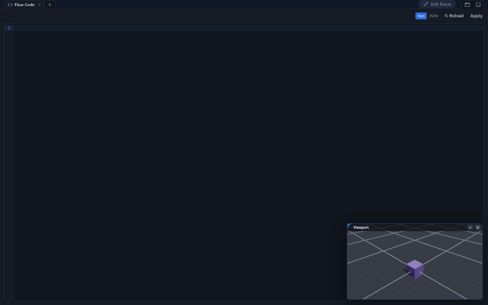
Menus
The right-click, Add (Shift+A) and viewport menus share one style: 32 px rows, an icon per row, shortcuts right-aligned, quiet section labels.
Right-click an object and the everyday actions come first — Properties, Rename, Duplicate, Delete — then Focus, Ping and Add note, then the editing modes. Rarer work is one level down: Transform ▸ (align to ground, origin, pivot…), Mesh ▸ (convert, boolean…), Physics & effects ▸ (joints, particles, flow effects), Prefab ▸ on a placed prefab copy, and Save as… ▸. Every action and its shortcut is still there.
The main menu's Project actions
The Project section at the top of the main menu has two layouts, picked in Settings ▸ Interface ▸ Lists & menus ▸ Project actions:
- Compact (the default on a computer and an unfolded phone) is a two-column grid: New from template… across the top, then Load | Save ▾, then Import | Export…. Save saves straight away with your last-used options; its ▾ opens Save options — what to save and what the file includes. Export… opens Publish / Export.
- List (the default on a folded phone) is one row per action — Templates, Import, Load, Save, Publish / Export — with the Project | Scene | ⚙ switch under Save; the ⚙ opens the same Save options.
- Auto is List on a phone and Compact everywhere else. Searching the settings for burger or compact finds it.
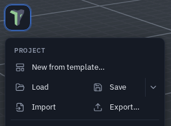
Dialogs
Modules, Sessions, Checkpoints, Templates, Storage, Publish / Export, Import and every confirmation share one dialog style: a header with the title and close, tabs directly under it where a dialog has them, one scrolling body and the answers bottom-right. Each view has one emphasised action; a destructive answer is red. Escape, a click outside and the close button behave as before. Customize character is a drawer you can resize by its edge — see Your Character.
Since 1.32 every dialog — Modules, Sessions, Templates, confirmations — covers the whole screen, the logo and its menu button included; close it with its own ✕, Done, Esc or a click outside. Settings is a window beside your work: since 1.35 opening it no longer closes an open sidebar, the docked windows or the Node editor (on a folded phone it is a full-screen sheet, and the dock comes back when you close it). What's new opens above everything else: the logo, undo and redo, the connection pill, notifications, your profile and the bottom bar.
Questions are dialogs, outcomes are toasts. Anything that asks you to decide something destructive or blocking is a dialog: Delete flow, Restore previous session?, deleting a group or a prefab, rebuilding a mesh or terrain that discards your edits, leaving a session to join another, exporting everything when nothing is selected, a scene too large for this device. Passive results — Saved, Copied, Exported… — stay toasts and are kept in the notification centre. Requests from other people (to load a session, to take control, to see your private scene) stay cards in the corner, like connection requests: a dialog would take over your screen from afar.
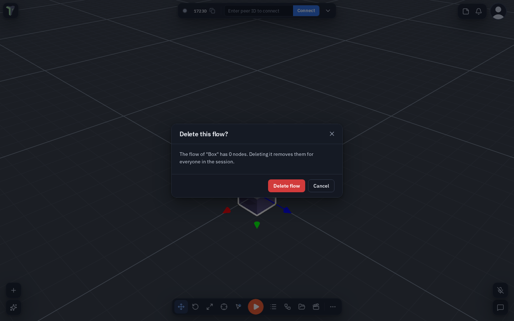
On a phone
Below 640 px wide — a folded phone — the app switches to a phone layout with less on screen and nothing missing. An unfolded phone and a computer share the desktop layout.
- Top: the logo (main menu) on the left, a Connect chip in the middle and, on the right, the notification bell, the peers button (while someone is connected) and your picture. The chip shows the status dot with the state beside it — Connected, Connecting… or Offline — whenever the top bar has room; when the bar is crowded (people are connected and you are in a call, so the peers button and the microphone take the space) it shrinks to the dot and ▾. Tap it for your invite link, the join field, Info and Toasts.
- Bottom bar: Add · Objects · Play · Explorer · More by default. Play stays the only orange control. More holds the rest: Chat, the AI assistant, Notes, Scene, the node editor and every other window, the edit tools, Statistics and Tools & View. You arrange the bar from More — see The phone bar and More.
- A bar button toggles its view. Tapping Objects, Explorer or any view you put on the bar while its tab is on screen minimizes the dock — every tab stays open and the 3D view clears; tap it again to bring it back. With Settings ▸ Interface ▸ Windows & chrome ▸ Allow undocking on touch screens on and that window floating, the button opens and closes the floating window instead.
- Play plays on the screen on a phone or tablet until you choose otherwise (a headset still enters VR). Press and hold Play for its menu: Play as (Play, Enter VR, Enter AR passthrough), Test play in a game scene, Move left / Move right (Play moves along the bar, and this device remembers where) and Arrange the bar…. Choosing Enter VR or Enter AR passthrough turns Play's icon into the headset (with A R for passthrough), as on a computer; Settings ▸ VR ▸ Play on the screen, even in a headset is the same choice.
- The selection toolbar appears only while something is selected — see The selection toolbar. With nothing selected — just looking around — there is no toolbar; More ▸ Edit has Inspect, Move, Rotate, Scale, Undo, Redo, Select multiple and Interact mode, and any of them can go on the bar.
- Panels are tabs of the bottom dock. Properties, Objects, Notes, Configure Scene, Layouts and Statistics sit in the dock beside the Explorer and the node editor — see The dock on a phone.
- Menus are sheets that open over the dock from the bottom: the main menu, More, the profile menu, notifications, the peers panel, the Connection sheet, Add and the press-and-hold action sheets, Chat, the AI assistant, the tool palettes (mesh edit, sculpt, spline) and Customize character — see Sheets on a phone. The bar with Play stays visible and tappable. Above the dock, the Add list and the other sheets that work on the selection, the selection toolbar rides just above the top edge — never on top of it — and follows that edge in the same frame while you drag a grab bar, so you can pick an object in Objects and move or undo without closing it. While a menu is open — the main menu, the profile menu, notifications, Connection, More, an object's or the viewport's action sheet, Customize character, Settings or any dialog — the selection toolbar hides, and it comes back when the menu closes.
- Docked windows open with their sidebars hidden: the Explorer, Node editor, UV editor, HUD editor, Profiler, Image editor and Code workspace give the screen to their work area (folded or unfolded). Open a side panel with its edge button or tab; it stays open next time, for that window.
- The dock's + at the end of its tab strip opens a Windows sheet: every window — the six dock panels included — with a show/hide switch. With floating windows allowed on the phone (Settings ▸ Interface ▸ Windows & chrome ▸ Allow undocking on touch screens), + works as on a computer — a menu that adds a window to the dock.
- Editors fit a phone: the Animation window shows one pane at a time, the Shader editor gives the canvas the whole screen with the palette and properties as sheets, and every toolbar that does not fit — UV editor tools, Profiler controls — scrolls sideways (with a fade where more is hidden); nothing is out of reach.
- Settings is a list you tap into, with ‹ Back on every page; Settings and dialogs open full-screen and cover the logo while they are open.
Touch targets are at least 44 px, switches 51 × 31, and text fields use 16 px text so the browser never zooms.
The phone bar and More
You choose what is on the bottom bar, and in what order, from More itself — there is no separate editor:
- Press and hold any item in More, then drag it onto the bar; it lands where you let go.
- Press and hold an item on the bar and drag it along the bar to move it, or up into More to take it off.
- Play works the same way: drag it anywhere on the bar, or into More. While Play is off the bar it waits at the start of More ▸ Windows, ready to be dragged back.
The tip at the bottom of More says it: Hold and drag items to or from the bar. It goes away by itself once you have added, moved or removed an item on the bar, and stays away; Settings ▸ Interface ▸ Reset tips brings it back. A dot on an item in More means it is already on the bar, and Reset bar (at the end of More) brings back the default. With More closed nothing moves by accident: a long press on a bar item opens More and picks that item up in one gesture.
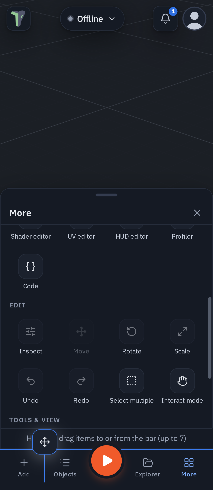
What can go on the bar — everything in More:
- Windows: Add, More, Objects, Statistics, Chat, Explorer, Node editor, Animation, Scene, AI assistant, Notes, Flow Code, Shader editor, UV editor, HUD editor, Profiler, Code;
- Edit: Inspect, Move, Rotate, Scale, Undo, Redo, Select multiple, Interact mode. Move, Rotate, Scale and Inspect work on the selection and look pressed while active;
- Tools & View: snapping, view and camera, and Focus mode (see Focus mode).
How many: up to seven, Play included. Up to five items show their names; with six or seven on a narrow phone the bar shows icons only (each still at least 44 px wide, with its name as the tooltip and for screen readers). An eighth is refused, and the last item cannot leave — the bar is how you get back to More. If you take More itself off the bar, the app tells you once: press and hold any item on the bar to get More back.
Show switches sit at the bottom of More (and in Settings ▸ Interface). All are on by default:
| Switch | Off means |
|---|---|
| Selection toolbar | no floating Move / Rotate / Scale / Inspect strip over a selection — handy once those tools are on your bar |
| Dock tab row | the row of tabs above docked windows is hidden; the bar and More still switch views |
| Grab handle | no grab bar on docked windows and sheets (and no tap to step the size); drag the top edge to resize |
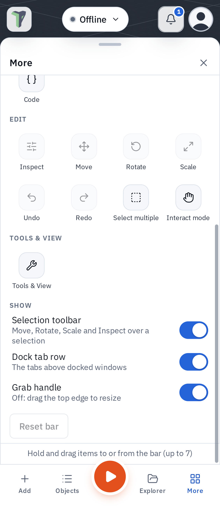
The bar and the switches are kept on this device; they are never shared with peers or saved in scenes, but a workspace layout saved on the phone keeps the bar. On a wider screen — an unfolded phone, a tablet, a computer — the desktop toolbar is used instead, and your phone bar is waiting for the next fold. A bar you customised in 1.32 carries over.
The dock on a phone
On a folded phone the panels you work in are tabs of the bottom dock, in the same strip as the Explorer, the node editor and the other editors:
| Tab | What it shows | Opens from |
|---|---|---|
| Properties | the selected object's properties | Inspect in the selection toolbar |
| Objects | the object list | the bar's Objects |
| Notes | the scene's notes; opening a note shows it as a page of the tab, closing it returns to the list | More ▸ Notes |
| Configure Scene | the scene's settings | More ▸ Scene, or the main menu's Configure Scene |
| Layouts | save and switch workspace layouts | the main menu's Layouts, or the dock's + |
| Statistics | the scene's budgets | More ▸ Statistics (since 1.34; before, a floating window) |
- All tabs share one height. Drag the dock's grab bar to resize it; swipe it down to minimize the dock.
- A tab's ✕ closes that panel. The dock's + lists every window, these six included, with a show/hide switch.
- More ▸ Statistics (or Statistics on your bar) toggles like any bar button: tapped while its tab is in front, it minimizes the dock. With Settings ▸ Interface ▸ Windows & chrome ▸ Allow undocking on touch screens on, Statistics floats as before.
- Several can be open at once — the properties no longer close when you open the notes.
- Play stays on top of whatever is open.
- The main menu closes as Configure Scene opens, since its tab is underneath the menu. On a computer the menu stays open, above the sidebar.
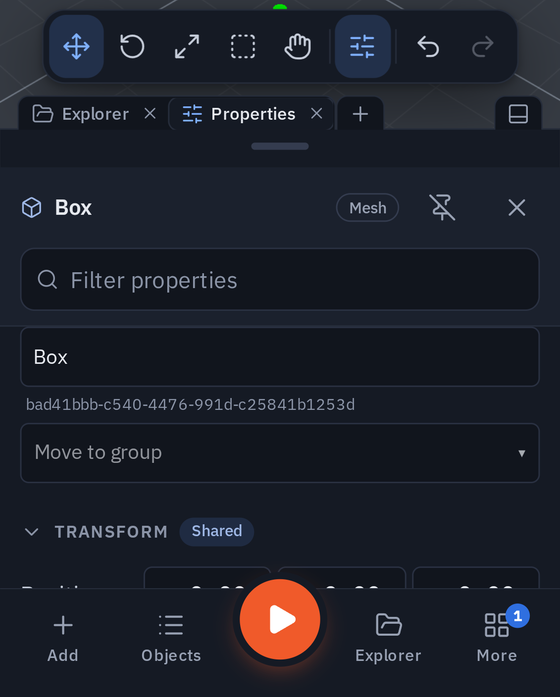
Folding and unfolding. Unfold the phone (or widen the window past 640 px) and each tab goes back to its place on the bigger screen: Properties and Configure Scene to their sidebar (the right side unless you moved them), Objects to its window or sidebar, Notes to the notes drawer, Layouts to the Layouts dialog. Fold it again and the same tabs come back, with the one you were looking at in front. What you open or close on the bigger screen carries over. A reload starts with a clean slate.
Sheets on a phone
Since 1.32 every sheet works the same way:
- One grab bar sits at the top of each sheet. It never scrolls away with the sheet's contents. (The Grab handle switch at the bottom of More hides it; the sheet's top edge still resizes it.)
- Drag the bar to make the sheet taller or shorter. It stops at a minimum and a maximum height, and each sheet remembers its height on this device.
- Swipe the bar down to the bottom to close the sheet; a tap on the bar steps its size.
- No sheet covers Play or the selection toolbar, and none rises into the top bar.
Since the 1.32 review a sheet also moves by its body, the way a phone's own sheets do — Add, the main menu, the notification centre, the profile menu, More and Chat:
- A list inside the sheet scrolls as usual. When the list is at its top, pulling down moves the sheet, and letting go far enough — or flicking down — closes it.
- A drag that started as a scroll stays a scroll: scrolling up and back down in one movement never closes the sheet. Pulled down and then back up, the sheet stops at its height and the list carries on scrolling.
- A quick flick closes the sheet from any height; a gentle one steps down to the next size. Past its tallest size the sheet stretches with resistance and springs back.
- Sideways strips, sliders, number fields and canvases inside a sheet keep their own gestures.
- The dock minimizes instead of closing. Its grab bar — or a pull down from the top of a tab's list — minimizes the dock with every tab still open (Properties, Objects, Notes, the Explorer, the node editor and the rest). The bottom bar's buttons bring it back.
- Your profile menu — tap your picture — is a sheet too, without a second copy of your picture in its header (it is already at the top right). Customize character and Profile settings open from it with a tap.
- The peers panel — the peers button in the top bar — opens as a sheet like the notifications: grab bar, swipe down to close. See Who is here.
For the Explorer's long-press actions on a phone, see Explorer: on a phone.
The selection toolbar
When something is selected, a toolbar floats above the bottom bar — or above the dock or sheet that is open, moving with its top edge in the same frame while you resize it:
| Button | What it does |
|---|---|
| Move / Rotate / Scale | the gizmo mode (keys 1 / 2 / 3) |
| Select multiple | a toggle: while it is on, every tap adds or removes an object (there is no Shift on a phone) |
| Interact | a toggle: tap the scene to play with it instead of editing (I) — see Edit and Interact |
| Inspect (the sliders icon) | opens the object's properties as the dock's Properties tab, or brings that tab to the front when another tab is in front; tap it again to close it. It looks pressed only while Properties is the tab on screen |
| Undo / Redo |
Every toggle shows its state: a filled (tinted) button is on. Tapping a selected object deselects it — see Tapping to select.
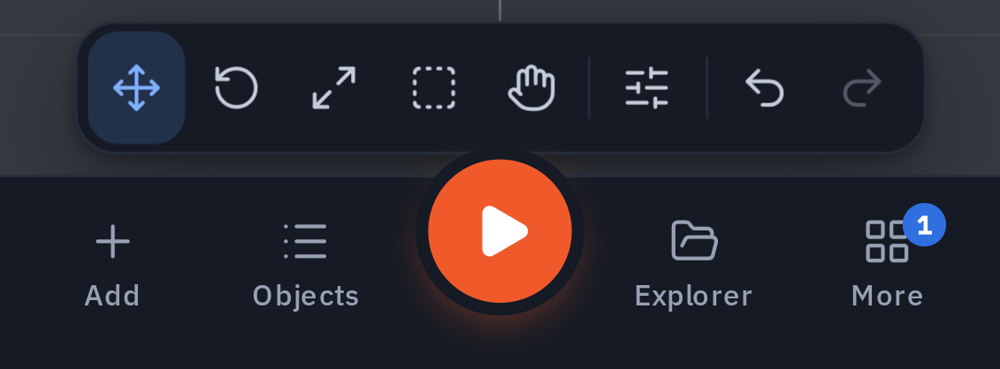
For module authors
Every part shown here is on the /kit page of the app, in every state, and module panels can use the same parts — see The UI kit.